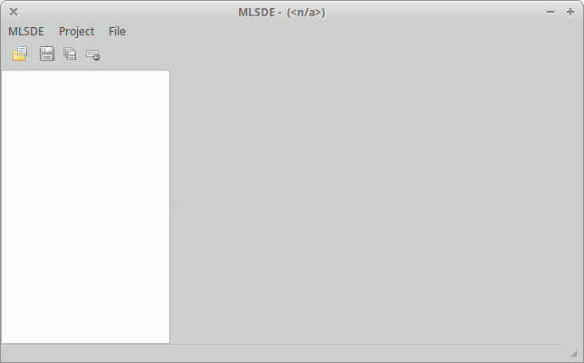
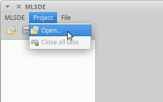
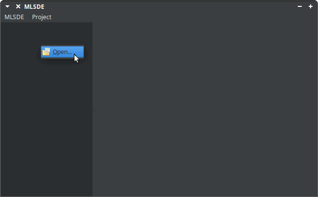
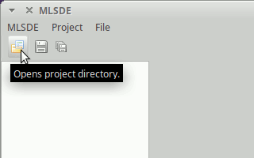
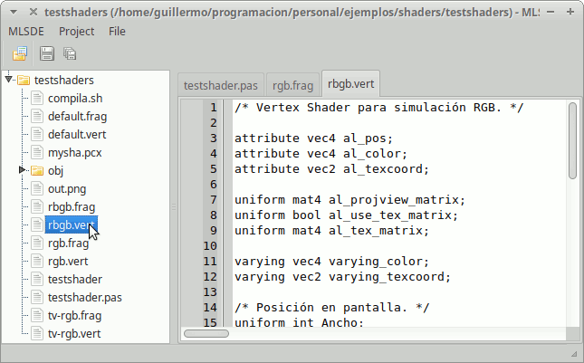
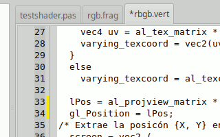
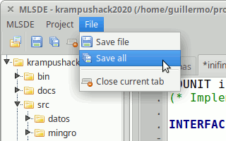
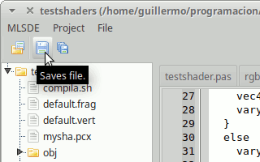

The first time you open MLSDE you'll see something similar to this:

Before to start using MLSDE it is recommendable to open the Configuration
Dialog. To do so select in the top menu MLSDE >
Configuration... (this is, the top option of the MLSDE menu).
You can select the language for the application. At the moment there are only
two languages: English and Spanish. In most cases you should select Default
(or English) as it will select the same language than your operating system
(if available).
Once selected your language click in the Ok button. Maybe a message box
appears telling that you need to restart MLSDE to make the changes effective.
Close it. Close MLSDE clicking in the Close Window button or MLSDE > Quit
in the menu and open MLSDE again: now it should use the selected language.
To open a file you must open a project first. On MLSDE a project is a directory.
To open a project you can click on menu Project > Open... or click with the
mouse right button in the left part of the window to open the Project Popup
Menu.
 
Also, you can use the Open project button from the tool bar.

Select the project directory in the dialog and accept. The project tree will appear on the left. To open a file just do double-click on the file name and the source editor will appear on the right.

Current version supports very basic edition. Select text by dragging the mouse
and then use Ctrl+C, Ctrl+X and Ctrl+V to copy, cut and paste.
Future versions will include more edition tools and options.
Modified files are marked by an asterisk in the tab. Modified lines are marked with a yellow line in the left gutter.

To save the modified files you can use the File > Save file menu option or
the Save file button. You can also save all modified files by selecting
Save all.
 